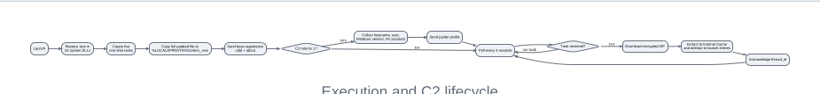
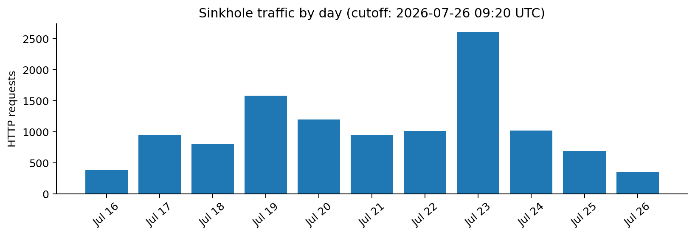

Technical Analysis of a Fighter-Configured Spyder Downloader
A later build matching the Spyder lineage publicly attributed to Patchwork
Executive Summary
- Provenance, Scope, and Sample Overview
- Packaging, Masquerade, and Signing
- Execution, Persistence, and Defense Evasion
- Host Profiling and Command-and-Control
- Payload Delivery
- Defensive Reacquisition of the C2 Domain
- Comparison with QiAnXin's 2024 Spyder Research
- Attribution Assessment
- Conclusion
Appendices
Appendix A - Indicators
Appendix B - ATT&CK Mapping
Appendix C - Key Functions
Appendix D - Evidence Index
References
Version 1.0 | Published 26 July 2026
Sample period: July 2024
Evidence cutoff: 2026-07-26 09:20 UTC
Primary classification: Windows downloader / loader
Technical lineage: Spyder, Fighter configuration branch
Public actor attribution: Patchwork; QiAnXin tracking designation APT-Q-36
Executive Summary
The original encrypted archive analyzed in this report was forwarded by a staff member from the office of a high-ranking Indian political figure and preserved unchanged. The political figure and source office are known to the author but are not named because doing so would not add to the technical findings.
The archive contained a signed 32-bit Windows downloader disguised as Logitech G HUB software. Its apparent size was 902,087,680 bytes, but only 2,077,184 bytes contained the functional PE image. The executable was expanded with exactly 900,000,000 zero bytes before the Authenticode certificate was appended. Matching embedded and calculated digests establish that the padding was part of the signed packaging workflow rather than later corruption. [E1-E2]
The malware restores clean executable sections in ten loaded Windows system DLLs, creates five one-time scheduled tasks, and copies the entire padded file to %LOCALAPPDATA%\Screen_.exe. It collects a stable machine identifier, hostname, username, Windows version, and installed antivirus products. It is configured to communicate over unencrypted HTTP with systembackupsvault[.]com, placing modified-Base64 JSON ina custom boop request header. The server can instruct it to download a password-protected ZIP archive, extract each entry into the Windows Internet Cache, and attempt to launch the extracted files. [E3-E7] The sample matches with high confidence the Fighter-configured Spyder downloader lineage described by QiAnXin in August 2024. The match includes the same profile value, registration schema, custom header, encoding, C2 paths, task schedule, encrypted-ZIP delivery model, DLL-restoration routine, and signing subject. QiAnXin attributes that lineage to Patchwork. This investigation independently establishes the technical lineage; the Patchwork association relies partly on QiAnXin's public actor attribution. [R1-R2] During the analysis, the embedded C2 domain was found to have expired and become available. It was acquired defensively and redirected to a controlled sinkhole at 2026-07-16 10:25:46 UTC. By 2026-07-26 09:20 UTC, the sinkhole had received 11,534 requests from 748 unique IP addresses. None matched the malware's distinctive /soup/pencil.php and boop protocol. The traffic was overwhelmingly generic Internet scanning. This produced no evidence of surviving callbacks to this domain during almost ten days of observation, but it does not prove that no infected systems or related infrastructure remain elsewhere. [E9]
The evidence supports high-confidence attribution to the Spyder family and Fighter lineage. It does not identify the human operator, the certificate-abuse mechanism, a contractor, a named government agency, or the sponsor of this specific operation. The confirmed targeting of a high-ranking Indian political office is noteworthy because public reporting commonly describes Patchwork as Indian or pro-Indian; the available evidence does not determine whether this reflects domestic collection, a separate operational customer, shared tooling, or limitations in existing cluster attribution.
Confidence terminology
| Term | Meaning in this report |
|---|---|
| Certain | Directly observed and reproducible in the supplied sample or sinkhole records. |
| High confidence | Supported by several distinctive, mutually consistent observations. |
| Moderate | More likely than alternatives, but important evidence is missing. |
| Plausible | Compatible with the evidence but not established. |
| Unsupported | No affirmative evidence in this investigation. |
1. Provenance, Scope, and Sample Overview
The encrypted delivery archive was forwarded by a staff member from the targeted political office. The archive was retained unchanged and analyzed without executing the malware. This report addresses the artifact, its technical lineage, and the infrastructure exposed by the binary. It does not attempt to reconstruct incident-response facts that were documented elsewhere.
Analysis included archive inspection, cryptographic hashing, PE and resource analysis, Authenticode extraction, import mapping, address-level disassembly, runtime-string decoding, Task Scheduler and WMI COM reconstruction, C2 protocol reconstruction, library identification, static cross-reference analysis, and defensive monitoring of the expired C2 domain.
| Property | Value |
|---|---|
| Delivery filename | [Politically themed filename referencing the targeted office].exe |
| Archive protection | AES-256 encrypted ZIP |
| Full-file size | 902,087,680 bytes |
| Full-file SHA-256 | bfeee28529c186b266ad8bec29f7a866d9ff7bbfaf32959a37e4de1006bcad08 |
| Functional PE size | 2,077,184 bytes |
| PE-core SHA-256 | 1bdb5bf22d74756a4c9da7dea447a851cf15bb83f4072469ed9cc374a46070cd |
| Architecture | 32-bit Intel Windows GUI executable |
| PE timestamp | 2024-07-15 17:24:07 UTC (0x66955B37) |
| Linker | Microsoft linker version 14.0 |
The file contains no Rich header, debug directory, PDB path, or recoverable source-build path. This is consistent with metadata removal or a build workflow that did not retain those artifacts, but the sample does not distinguish between those explanations. [E1]
2. Packaging, Masquerade, and Signing
2.1 Exact signed-padding layout
Signed file layout
| Functional PE | Zero padding | Signature |
|---|---|---|
| 2,077,184 bytes | exactly 900,000,000 bytes | 10,496 bytes |
Total: 902,087,680 bytes. Matching Authenticode digests show that the padding was present when the file was signed.
Signed file layout
The functional PE ends at file offset 0x001FB200; the certificate table begins at 0x35C49B00 and is 10,496 bytes long. The exact 900,000,000-byte gap is all-zero padding. Because Authenticode excludes the certificate table but covers the preceding file content, the matching digest proves that the padded structure was present when the executable was signed. [E1-E2]
This design provides a compact delivery artifact when compressed while producing a very large extracted executable. It can frustrate pipelines with file-size, upload, storage, or analysis-time limits. It also imposes costs on the malware: the 32-bit process attempts to allocate and copy roughly 902 MB into LocalAppData, which can fail on systems with constrained address space, memory, or disk capacity.
2.2 Logitech masquerade
The version resources claim Logitech G HUB identity, including Logitech, Inc., G HUB, Logitech G HUB System Tray, and logi_system_tray.app. The resource section includes Logitech-themed visual assets and a large WinUI manifest. The file is not signed by Logitech and its behavior is unrelated to G HUB. [E1]
Other camouflage is less coherent: the persistence copy is named Screen_.exe, the tasks use the Screen_int prefix, and the Task Scheduler author is ASUS. The mixture suggests reusable packaging and persistence templates rather than a single carefully consistent vendor imitation.
2.3 Code-signing identity
| Property | Value |
|---|---|
| Subject | Xi'an Qinxuntao Network Technology Co., Ltd. |
| Corporate identifier | 91610113MA6X13GR4H |
| Issuer | Certum Extended Validation Code Signing 2021 CA |
| Serial | 7E62CF95CF6830668D5433052DC63A62 |
| SHA-256 certificate fingerprint | 58486F3B9B6F693C0685C6F3026D1C8A6621DBC72965F505B4A904A30934601D |
| Validity | 2024-05-08 to 2025-05-08 |
| Embedded countersignature time | 2024-07-17 14:14:40 UTC |
The osslsigncode verification run reported certificate expiry, while the embedded and calculated file digests matched. The historical validity of the countersignature chain was not independently established. [E2] The certificate holder is an attribution pivot, not proof of Chinese operation. Plausible explanations include certificate or token compromise, fraudulent issuance, a shell entity, an insider, a signing service, or knowing participation. The sample does not distinguish among them.
3. Execution, Persistence, and Defense Evasion

Execution and C2 lifecycle
3.1 Restoration of system-DLL code
The malware maps clean System32 images and overwrites the loaded.text sections of ten DLLs: kernel32.dll, ntdll.dll, ADVAPI32.dll, SHELL32.dll, ole32.dll, OLEAUT32.dll, CRYPT32.dll, WS2_32.dll, WININET.dll, and bcrypt.dll.
The routine uses GetModuleHandleW, maps the disk image with SEC_IMAGE, locates.text, changes the loaded section protection with VirtualProtect, copies the clean bytes, and restores the original protection.
This can remove inline user-mode hooks installed by security products, sandboxes, or instrumentation. No claim is made that a particular commercial product was successfully bypassed. [E4]
The code incorrectly calls FreeLibrary on module handles obtained through GetModuleHandleW. This API-lifecycle mistake, together with other defects below, is useful as a source-lineage fingerprint.
3.2 Persistence copy and scheduled tasks
The malware constructs %LOCALAPPDATA%\Screen_.exe. It first attempts to delete and re-register five tasks that point to this path, then reads its own full padded executable and writes it to the destination. [E5]
| Task | One-time boundary |
|---|---|
| Screen_int A | 14:00 |
| Screen_int B | 15:00 |
| Screen_int C | 16:00 |
| Screen_int D | 17:00 |
| Screen_int E | 18:00 |
The tasks use TASK_TRIGGER_TIME, TASK_CREATE_OR_UPDATE, and TASK_LOGON_INTERACTIVE_TOKEN. The code calls ITaskSettings::put_StartWhenAvailable(TRUE). Microsoft documents that this setting applies only to time-based tasks with an end boundary or tasks that repeat indefinitely; neither condition was established here, so its practical effect is uncertain. The code writes PT5M through IIdleSettings::put_WaitTimeout, which is an idle-condition wait value rather than a repetition interval. RestartOnIdle is set, but Microsoft documents that it is used only when StopOnIdleEnd is true, which was not established. [R3-R6]
The five staggered boundaries are best interpreted as fallback execution opportunities. An earlier successful launch recreates the task set for a new date before later boundaries normally occur. This interpretation is based on the observed control flow rather than a documented operator statement.
3.3 Task-date defects
The malware obtains UTC time with GetSystemTime and constructs the boundary as:
<year>-<month>-<day + 1>T<hard-coded time>
It performs no calendar normalization. At month-end it may generate invalid dates such as
2024-07-32T14:00:00. It also omits a UTC marker or offset. Microsoft documents that a StartBoundary without an offset uses the local computer's timezone and daylight-saving configuration. The malware therefore combines a UTC-derived date with local-time interpretation. [E5, R3]
3.4 Defective mutex
The implant creates the named mutex:
T9zDZZVxfMECyLHBrw9dmMNzgz24RWxL2p
It checks only whether CreateMutexW returned NULL and never tests ERROR_ALREADY_EXISTS. The mutex does not correctly enforce single-instance execution. [E5]
4. Host Profiling and Command-and-Control
4.1 Configuration
| Field | Value |
|---|---|
| Version | 0.0.0.1 |
| Protocol | HTTP |
| Host | systembackupsvault[.]com |
| Base path | /soup/ |
| Registration/poll endpoint | pencil.php |
| Payload endpoint | download.php?mname= |
| Poll delay | 4,000 ms |
| Profile | Fighter |
Fighter is build-time configuration sent to the server under jupiter.profile. It is not victim-derived. The value may represent a project, branch, campaign family, customer, operator channel, or backend-routing profile; the sample cannot determine which. [E3, E6]
4.2 Registration and profiling
The implant initially sends a base JSON object containing:
{
"xdid": "<encoded MachineGuid>",
"about": "<encoded 0.0.0.1>"
}If the server responds with 1, the malware gathers and temporarily adds:
{
"jupiter" : {
"address": "<encoded fully qualified hostname>",
"page_id": "<encoded username>",
"weather": "<encoded Windows ProductName>",
"profile": "<encoded Fighter>",
"news": "<encoded antivirus-product data>"
}
}Antivirus information is obtained through WMI by connecting to root\SecurityCenter2, executing SELECT * FROM AntiVirusProduct, and reading each displayName. After the detailed registration is sent, jupiter is removed and the base object is reused for polling. [E6]
4.3 Wire protocol
JSON object
Base64
Replace + / = with . _ - boop: <encoded value>
POST /soup/pencil.php
empty body
Server response
| 0 or <=5 bytes: | >5 bytes: |
|---|---|
| sleep and poll again | decode task JSON |
C2 encoding and response handling
The verified C2 channel uses WinINet and an empty request body. JSON is Base64-encoded and then transformed:
+ -> .
/ -> _
= -> - The result is carried in:
boop: <encoded JSON>
The hard-coded user agent impersonates Chrome 104 on macOS. A response of 0, or any response no longer than five bytes, leads to a four-second sleep and another poll. A longer response is decoded as a task. [E3]
5. Payload Delivery
A decoded task contains first, middle, and last fields. The sample uses them as follows:
| Field | Use in this build |
|---|---|
| first | Parsed numerically and acknowledged as thread_id |
| middle | Archive name and mname parameter |
| last | ZIP extraction password |
The malware constructs:
hxxp://systembackupsvault[.]com/soup/download.php?mname=<middle>
It retrieves the archive with URLOpenBlockingStreamW, stores it as %LOCALAPPDATA%\<middle>.zip, and processes it with minizip-compatible routines and zlib code containing 1.3.1 version strings. Each archive entry is written to the Windows Internet Cache and passed to CreateProcessW. The code attempts to launch every entry; static analysis cannot establish that process creation succeeds. [E7]
The archive is deleted after processing, while extracted files remain. The malware then sends thread_id, removes it from the persistent JSON object, and resumes polling. The acknowledgement indicates completion of the downloader's extraction and launch attempts, not successful completion of a child payload.
The stage-one sample does not itself implement screenshot capture, file theft, credential theft, keylogging, ransomware, or an interactive shell. It is a modular delivery and profiling component; follow-on capabilities depend on server-selected payloads.
6. Defensive Reacquisition of the C2 Domain
Static analysis identified systembackupsvault[.]com as the configured C2 domain. Infrastructure checks showed that the registration had expired and the domain was available. It was acquired defensively and redirected to a controlled sinkhole beginning at 2026-07-16 10:25:46 UTC. Current DNS and hosting data after that time describe the research sinkhole, not attacker infrastructure. [E9]

Sinkhole traffic by day
At the evidence cutoff, 2026-07-26 09:20 UTC, the sinkhole had operated for 9 days, 22 hours, 54 minutes, and 14 seconds.
| Metric | Result |
|---|---|
| Total requests | 11,534 |
| Unique source IPs | 748 |
| GET | 11,450 |
| HEAD | 60 |
| POST | 24 |
| Previous 24 hours | 1,034 requests from 72 IPs |
| Requests matching the malware protocol | 0 |
None of the requests matched the expected Spyder protocol: no confirmed implant request combined the relevant /soup/behavior, boop header, user agent, and encoded-message structure. The traffic was consistent with generic automated scanning. Country counts must not be interpreted as victim locations; several countries' totals were dominated by a small number of high-volume sources.
The sinkhole did not issue tasks or host payloads, and no matching callback or victim identifier was received.
The result provides no evidence of active callbacks to this domain during the observation window. It cannot establish that no infected hosts remain, that no host uses cached historical infrastructure, or that other Spyder domains are inactive.
7. Comparison with QiAnXin's 2024 Spyder Research
QiAnXin published an August 2024 analysis of a Spyder downloader compiled on June 4, 2024 and attributed the activity to Patchwork /APT-Q-36. The present sample was compiled approximately 41 days later. Direct binary diffing was not possible, so the comparison is limited to behavior and artifacts documented in the public report. [R1]
| Stable lineage features | Sample-specific or deployment changes |
|---|---|
| Fighter profile and 0.0.0.1 version | C2 changed from onlinecsstutorials[.]com to systembackupsvault[.]com |
| xdid, about, and jupiter schema | Mutex changed |
| address, page_id, weather, profile, news | Copy name changed from zlib1.exe to Screen_.exe |
| boop header and modified Base64 | Task prefix changed from zlib data compression to Screen_int |
| /soup/pencil.php and download.php?mname= | Logitech resources and ASUS task author |
| Five one-time task times, 14:00-18:00 | Political lure and encrypted delivery archive |
| Password-protected ZIP delivery and Internet Cache staging | Exact 900,000,000-byte signed padding documented in this sample |
| Ten-DLL .text restoration | Published decoy URLs present but no static references recovered |
| Same signing subject | first observed as acknowledgement thread_id |
The stability of the protocol, task template, profile value, and source-level quirks establishes a common technical lineage. The changed domain, mutex, persistence names, task metadata, and masquerade are consistent with campaign or build configuration.
QiAnXin reported active decoy requests to GitHub and Google endpoints. The same literal URLs are present in this binary, but Ghidra cross-reference analysis and direct disassembly searches recovered no static references. They are therefore assessed with high confidence as inactive data in this build, while acknowledging that static analysis cannot absolutely exclude a computed or indirect reference. Their persistence is consistent with source-tree or linked-library residue. [E8, R1]
QiAnXin also observed screenshot and file-information collection components delivered by Spyder. Those findings establish capabilities used in the broader lineage, not payloads delivered by this particular C2. No follow-on component from systembackupsvault[.]com was recovered.
8. Attribution Assessment
8.1 Technical lineage
The sample belongs to Spyder and the Fighter configuration lineage with high confidence. The conclusion rests on an unusually specific protocol and implementation fingerprint rather than generic techniques.
8.2 Patchwork association
The sample matches with high confidence the Spyder lineage that QiAnXin attributes to Patchwork. The resulting Patchwork association is strong but partly inherited from that public actor attribution; this investigation independently proves the technical match, not the identity of the operators. MITRE describes Patchwork as a cyber-espionage group whose attribution is not definitive, while noting circumstantial evidence of an Indian or pro-Indian nexus. [R1-R2]
8.3 Confirmed Indian political targeting
The archive's provenance establishes that a high-ranking Indian political office was targeted. This is analytically important because public reporting commonly presents Patchwork as Indian or pro-Indian.
Possible explanations include domestic political collection, use of Spyder by a separate customer or team, shared development or infrastructure suppliers, or limitations in existing actor-cluster attribution. The sample does not distinguish among them.
8.4 Signer and developer implications
The Chinese certificate subject is not evidence of Chinese sponsorship. Exact certificate pivots and the corporate identifier may reveal a compromised subscriber, fraudulent issuance, broker, shell company, or supplier, but this investigation does not resolve the relationship.
A distinctive developer or builder fingerprint emerges from the combination of:
- positional TLS-backed XOR string initialization;
- the custom Base64 alphabet and boop protocol;
- the jupiter schema and Fighter profile;
- ten-DLL.text restoration;
- FreeLibrary(GetModuleHandleW(...)) misuse;
- defective mutex handling;
- five one-time tasks with naive day + 1 construction;
- UTC/local boundary mismatch;
- manual whole-file self-copy;
- encrypted multi-entry ZIP execution;
- dead CPR/libcurl-related URL data;
- and exact 900,000,000-byte signed padding.
These features can support future sample clustering. They do not identify a named person or organization.
8.5 Attribution conclusion
| Layer | Assessment |
|---|---|
| Malicious downloader behavior | Certain |
| Spyder family | High confidence |
| Fighter lineage | High confidence |
| Match to QiAnXin's documented variant | High confidence |
| Patchwork association | Strong; conditional in part on QiAnXin's attribution |
| Indian/pro-Indian nexus | Contextual, not independently proven by this sample |
| Same individual developer | Unresolved |
| Certificate holder's role | Unresolved |
| Layer | Assessment |
| Named agency or government sponsor | Unsupported |
9. Conclusion
The analyzed artifact is a signed, deliberately oversized Windows downloader from the Fighter-configured Spyder lineage. It was supplied from a confirmed high-ranking Indian political target, combines a political lure with Logitech masquerade, establishes scheduled-task persistence, profiles the host and its security products, and uses a distinctive custom HTTP protocol to obtain encrypted follow-on payloads.
The strongest attribution finding is technical: the sample matches the Spyder lineage documented by QiAnXin with high confidence. Its association with Patchwork is strong but depends partly on QiAnXin's actor attribution. The confirmed Indian political victimology introduces an important tension with the usual Indian/pro-Indian characterization of Patchwork and may indicate domestic collection, shared tooling, multiple customers, or an incomplete public cluster model.
The defensive reacquisition of the expired C2 domain added a rare operational observation. Nearly ten days of sinkhole monitoring produced 11,534 requests but no traffic matching the malware protocol. That result narrows the current activity assessment for this specific domain without supporting broader claims that the campaign or all infections are inactive.
The sample does not reveal the human operator, sponsor, certificate-abuse mechanism, or payloads assigned to this target. Those questions require external delivery, certificate, provider, infrastructure, or law-enforcement evidence rather than further interpretation of this binary alone.
Appendices
Appendix A - Indicators
Files and certificate
| Type | Value |
|---|---|
| Full-file SHA-256 | bfeee28529c186b266ad8bec29f7a866d9ff7bbfaf32959a37e4de1006bcad08 |
| PE-core SHA-256 | 1bdb5bf22d74756a4c9da7dea447a851cf15bb83f4072469ed9cc374a46070cd |
| PE-core SHA-1 | f1ec0f60df9b5f63bc7f2fd18f3247e8d0341702 |
| PE-core MD5 | b0838f6aa79f5b7554d76d097cfb80b3 |
| Persistence file | %LOCALAPPDATA%\Screen_.exe |
| Exact padding | 900,000,000 zero bytes |
| Certificate serial | 7E62CF95CF6830668D5433052DC63A62 |
| Certificate SHA-256 | 58486F3B9B6F693C0685C6F3026D1C8A6621DBC72965F505B4A904A30934601D |
Network and host
| Type | Value |
|---|---|
| C2 domain | systembackupsvault[.]com |
| Registration/poll path | /soup/pencil.php |
| Payload path | /soup/download.php?mname= |
| Header | boop |
| Poll interval | 4 seconds |
| Mutex | T9zDZZVxfMECyLHBrw9dmMNzgz24RWxL2p |
| Tasks | Screen_int A through Screen_int E |
| Task author | ASUS |
| WMI namespace | root\SecurityCenter2 |
| WMI query | SELECT * FROM AntiVirusProduct |
Appendix B - ATT&CK Mapping
| Technique | ID | Evidence |
|---|---|---|
| User Execution: Malicious File | T1204.002 | Encrypted archive and deceptive executable filename |
| Masquerading | T1036 | Logitech identity and utility-themed task names |
| Code Signing | T1553.002 | Signed malicious executable |
| Binary Padding | T1027.001 | Exact 900,000,000-byte padding |
| Obfuscated Files or Information | T1027 | Encoded strings and modified Base64 |
| Scheduled Task/Job: Scheduled Task | T1053.005 | Five COM-created time triggers |
| Query Registry | T1012 | MachineGuid and ProductName |
| System Owner/User Discovery | T1033 | GetUserNameW |
| System Information Discovery | T1082 | Hostname and Windows product information |
| Security Software Discovery | T1518.001 | WMI antivirus enumeration |
| Application Layer Protocol: Web Protocols | T1071.001 | HTTP C2 |
| Data Encoding | T1132.001 | Base64 with custom substitutions |
| Ingress Tool Transfer | T1105 | Remote encrypted-ZIP retrieval |
| Deobfuscate/Decode Files | T1140 | Password-protected ZIP extraction |
| Impair Defenses | T1562.001 | Replacement of loaded DLL.text sections |
| File Deletion | T1070.004 | Downloaded archive deletion |
Appendix C - Key Functions
| Address | Analytical label | Role |
|---|---|---|
| 0x401000 | Encoder | Base64 and custom substitutions |
| 0x4015B0 | DLL restorer | Replaces loaded .text sections |
| 0x401800 | WinINet POST | Registration, polling, acknowledgement |
| 0x401950 | URLMon downloader | Retrieves payload archive |
| 0x401A40 | Registry reader | MachineGuid and ProductName |
| 0x401AE0 | Task builder | Creates one-time scheduled tasks |
| 0x402700 | Configuration initializer | C2 and profile structure |
| 0x402B30 | WMI collector | Antivirus-product enumeration |
| 0x402F30 | Payload handler | Write, extract, launch, cleanup |
| 0x403260 | Main orchestration | Startup, persistence, C2, polling |
Appendix D - Evidence Index
| ID | Finding group | Primary basis |
|---|---|---|
| E1 | Sample identity, PE metadata, | Original archive, full file, PE-core |
| resources, padding | extraction, PE parsing | |
| E2 | Signature and certificate | Authenticode extraction and osslsigncode output |
| E3 | Configuration and C2 | Function 0x402700; WinINet routine 0x401800; decoded constants |
| E4 | DLL restoration | Function 0x4015B0; API mapping and section-name confirmation |
| E5 | Persistence and task semantics | Function 0x401AE0; five call sites; COM vtable mapping |
| E6 | Registration and profiling | Main control flow; WMI function 0x402B30; decoded JSON keys |
| E7 | Payload delivery | URLMon routine 0x401950; payload function 0x402F30 |
| E8 | Inactive URL assessment | Ghidra XREF output and direct disassembly-reference search |
| E9 | Sinkhole | Controlled-domain HTTP logs through 2026-07-26 09:20 UTC |
| E10 | Provenance | Original unchanged archive forwarded by staff from targeted office |
References
- R1. QiAnXin Threat Intelligence Center - Analysis of New Variants and Subsequent Components of Patchwork Spyder Downloader, 23 August 2024.
- R2. MITRE ATT&CK - Patchwork, G0040.
- R3. Microsoft - ITrigger::put_StartBoundary.
- R4. Microsoft - ITaskSettings::put_StartWhenAvailable.
- R5. Microsoft - IIdleSettings::put_RestartOnIdle.
- R6. Microsoft - IIdleSettings::put_WaitTimeout.
- R7. MITRE ATT&CK - User Execution: Malicious File, T1204.002.